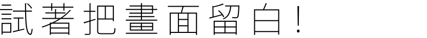

<!DOCTYPE html>
<html lang="en">

<head>
    <meta charset="UTF-8">
    <meta name="viewport" content="width=device-width, initial-scale=1.0">
    <title>BAAK</title>
    <style>
        * {
            margin: 0;
            padding: 0;
        }

        .shell {
            position: relative;
            top: 300px;
            left: 48%;
            width: 100px;
            height: 100px;
            background-color: rgba(255, 255, 255, 0);
        }

        .ball {
            position: absolute;
            width: 93px;
            height: 93px;
            border-radius: 100%;
            background: url(./ball.png) no-repeat center center;
            z-index: 1;
        }

        .wrap {
            display: none;
        }
    </style>
    <script src="./jquery.min.js"></script>
</head>


<body>
    <div class="wrap"></div>
    <div class="shell">
        <div class="ball"> </div>
    </div>
    <script>
        // 浏览器显示页面的宽高
        var width = document.documentElement.clientWidth;
        var height = document.documentElement.clientHeight;

        // 小球移动的范围
        var width_max = width - 93;
        var height_max = height - 93;
        console.log("width_max = " + width_max);
        console.log("height_max = " + height_max);

        // 获取小球
        var shell = document.querySelector(".shell");
        var wrap = document.querySelector('.wrap');
        var x = 0;
        var y = 0;
        // 鼠标移动事件
        shell.addEventListener('mousemove', function (e) {
            directionMouse();

            var direction = wrap.innerText;

            if (direction == '右侧进入' || direction == '下方进入') {
                shell.style.left = e.pageX - 90 + 'px';
                shell.style.top = e.pageY - 70 + 'px';
            } else if (direction == '左侧进入' || direction == '上方进入') {
                shell.style.left = e.pageX + 'px';
                shell.style.top = e.pageY - 30 + 'px';
            }

            if (e.pageY <= 90) {
                shell.style.top = 0;
            }

            if (e.pageY >= height_max) {
                shell.style.top = height_max + 'px';
            }

            if (e.pageX <= 105) {
                shell.style.left = 0;
            }

            if (e.pageX >= width_max + 10) {
                shell.style.left = width_max + 'px';
            }

            // 小球反弹 向右
            if (e.pageX < 5) {

                var x = e.pageX + Math.ceil(Math.random() * 1000);
                animate_x(shell, x);
            }

            // 小球反弹 向左
            if (e.pageX > width_max) {
                var x = e.pageX - Math.ceil(Math.random(300) * 1000);
                animate_x(shell, x);

            }
            // 小球反弹 向下
            if (e.pageY < 5) {
                var y = e.pageY + Math.ceil(Math.random(200) * 500);
                animate_y(shell, y);
            }
            // 小球反弹 向上
            if (e.pageY > height_max - 10) {
                var y = e.pageY - Math.ceil(Math.random(200) * 500);
                animate_y(shell, y);
            }

        });


        // 判断鼠标从那侧进入
        var directionMouse = function () {
            var ret;
            var shell = document.querySelector('.shell');
            var wrap = document.querySelector('.wrap');
            var hoverDir = function (e) {
                var w = shell.offsetWidth,
                    h = shell.offsetHeight,
                    x = (e.clientX - shell.offsetLeft - (w / 2)) * (w > h ? (h / w) : 1),
                    y = (e.clientY - shell.offsetTop - (h / 2)) * (h > w ? (w / h) : 1),
                    // 上(0) 右(1) 下(2) 左(3)
                    direction = Math.round((((Math.atan2(y, x) * (180 / Math.PI)) + 180) / 90) + 3) % 4,
                    eventType = e.type,
                    dirName = new Array('上方', '右侧', '下方', '左侧');
                if (e.type == 'mouseover' || e.type == 'mouseenter') {

                    wrap.innerHTML = dirName[direction] + '进入';

                } else {

                    wrap.innerHTML = dirName[direction] + '离开';

                }
            }
            if (window.addEventListener) {
                shell.addEventListener('mouseover', hoverDir, false);
                shell.addEventListener('mouseout', hoverDir, false);
            } else if (window.attachEvent) {
                shell.attachEvent('onmouseenter', hoverDir);
                shell.attachEvent('onmouseleave', hoverDir);
            }

        }

        function animate_x(obj, target, callback) {
            // console.log(callback);  callback = function() {}  调用的时候 callback()

            // 先清除以前的定时器，只保留当前的一个定时器执行
            clearInterval(obj.timer);
            obj.timer = setInterval(function () {
                // 步长值写到定时器的里面
                // 把我们步长值改为整数 不要出现小数的问题
                var step = (target - obj.offsetLeft) / 10;
                step = step > 0 ? Math.ceil(step) : Math.floor(step);
                if (obj.offsetLeft == target) {
                    // 停止动画 本质是停止定时器
                    clearInterval(obj.timer);
                    // 回调函数写到定时器结束里面
                    // if (callback) {
                    //     // 调用函数
                    //     callback();
                    // }
                    callback && callback(); // 与上面等价
                }
                // 把每次加1 这个步长值改为一个慢慢变小的值  步长公式：(目标值 - 现在的位置) / 10
                obj.style.left = obj.offsetLeft + step + 'px';

            }, 15);
        }

        function animate_y(obj, target, callback) {
            // console.log(callback);  callback = function() {}  调用的时候 callback()

            // 先清除以前的定时器，只保留当前的一个定时器执行
            clearInterval(obj.timer);
            obj.timer = setInterval(function () {
                // 步长值写到定时器的里面
                // 把我们步长值改为整数 不要出现小数的问题
                var step = (target - obj.offsetTop) / 10;
                step = step > 0 ? Math.ceil(step) : Math.floor(step);
                if (obj.offsetTop == target) {
                    // 停止动画 本质是停止定时器
                    clearInterval(obj.timer);
                    // 回调函数写到定时器结束里面
                    // if (callback) {
                    //     // 调用函数
                    //     callback();
                    // }
                    callback && callback(); // 与上面等价
                }
                // 把每次加1 这个步长值改为一个慢慢变小的值  步长公式：(目标值 - 现在的位置) / 10
                obj.style.top = obj.offsetTop + step + 'px';

            }, 15);
        }
    </script>

</body>

<!-- BAAKlogo -->
<div style="float: left;
            width: 100%;
            margin: 0 0 30px 0px;
            padding: 10px;
                background:#FFFFFF;
                /*border: 1px solid #666666;*/
            border-radius: 3px; 
            -webkit-border-radius: 3px;">

    <div style="color:rgb(34, 34, 34); 
            font-size: 20px; font-family: 'JoJo', cursive;
            margin: 0px 0px 10px 200px;">


        <body>BAAK
        </body>
    </div>

    <link href="https://fonts.googleapis.com/css2?family=Source+Sans+Pro:ital,wght@1,200&display=swap" rel="stylesheet">
<!-- OUREXPERTISES_BUTTON -->
    <div style="float: left;
            width: 100%;
            margin: 0 0 30px 0px;
            padding: 10px;
                background:#FFFFFF;
                /*border: 1px solid #666666;*/
            border-radius: 3px; 
            -webkit-border-radius: 3px;">

        <div style="color:rgb(34, 34, 34); 
            font-size: 20px; font-family: 'Source Sans Pro', sans-serif; letter-spacing: 4px; 
            margin: 484px 0px 10px 1000px;">


            <a href="https://kaipo0602.wixsite.com/baak"style="color:black; text-decoration:none" >OUR EXPERTISES
            </a>
        </div>


        <div id="cf">
            
            
          </div>

 
</html>

<style>

#cf {
  position:absolute;
  height:281px;
  width:450px;
  margin: -27px 0px 0px 200px;
}

#cf img {
  position:absolute;
  left:0;
  -webkit-transition: opacity 1s ease-in-out;
  -moz-transition: opacity 1s ease-in-out;
  -o-transition: opacity 1s ease-in-out;
  transition: opacity 1s ease-in-out;
}

#cf img.top {
    animation-name: cfFadeInOut;
animation-timing-function: ease-in-out;
animation-iteration-count: infinite;
animation-duration: 7s;
animation-direction: alternate;
}

@keyframes cfFadeInOut {
  0% {
  opacity:1;
}
45% {
opacity:1;
}
55% {
opacity:0;
}
100% {
opacity:0;
}
}


</style>
